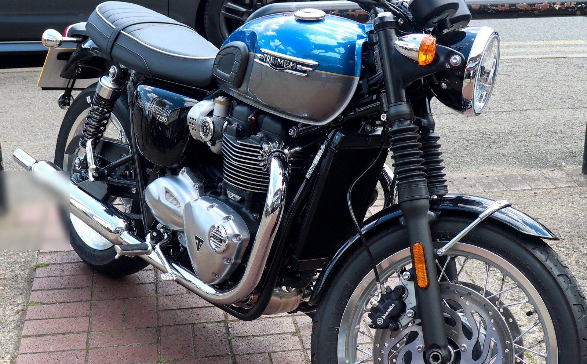
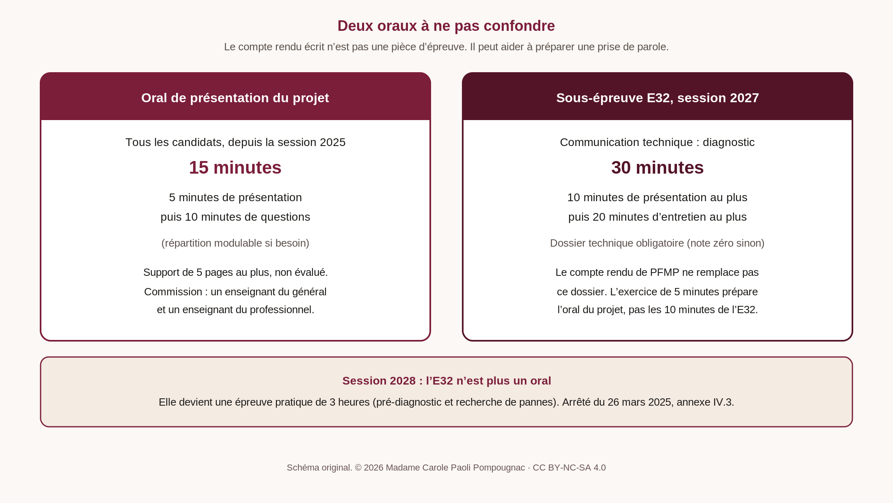
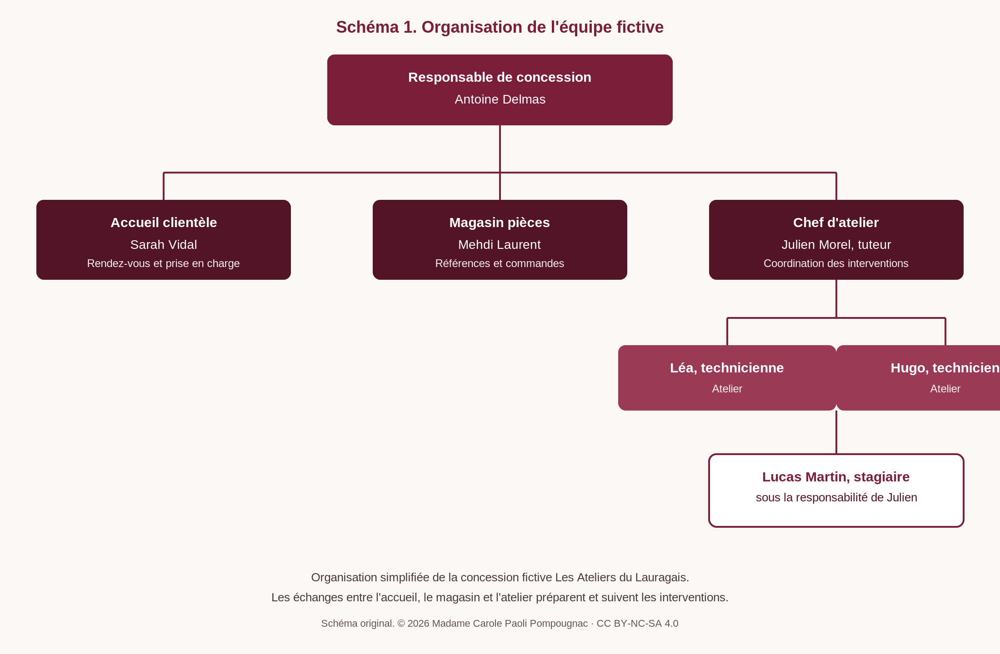
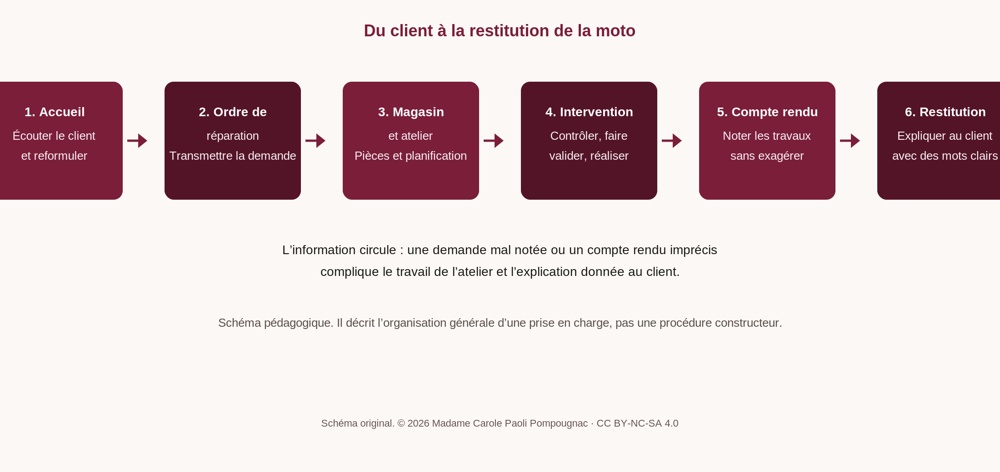
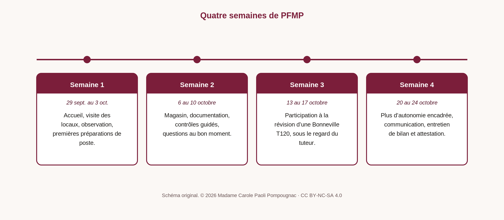
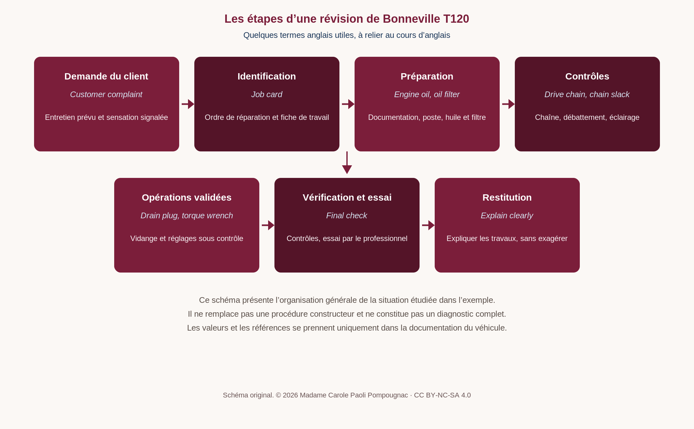
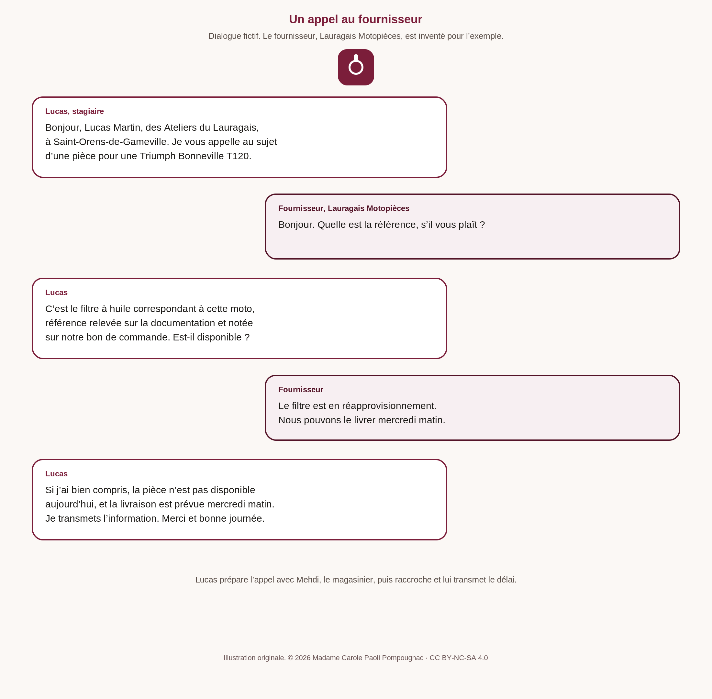

Baccalauréat professionnel · Lettres · Lycée professionnel
Rendre compte d’une PFMP
Du compte rendu écrit à l’oral de l’épreuve professionnelle
Baccalauréat professionnel Maintenance des véhicules, option motocycles. Modèle pédagogique pour aider l’élève à rendre compte d’une période de formation en milieu professionnel.

Un modèle pour écrire, puis pour parler. Le document téléchargeable réunit le cadre officiel, un plan détaillé, des consignes de rédaction, une partie « Du compte rendu de PFMP à l’oral », une grille d’évaluation, et un exemple rédigé complet. L’exemple invente une PFMP chez une concession Triumph fictive, à Saint-Orens-de-Gameville, près de Toulouse, où une concession réelle existe bien.
Travail transversal Lettres et anglais. Ce support appartient au cours de lettres : il aide l’élève à rendre compte, par écrit, de sa PFMP, et à préparer une prise de parole.
Un support compagnon, From fault to quote, conçu pour le cours d’anglais, prolonge la même situation fictive. L’élève contacte la maison mère Triumph, au Royaume-Uni, par courriel et par téléphone, afin de demander des pièces et un devis. Les deux documents sont conçus pour être utilisés ensemble.
Comment nommer ce travail
Les textes en vigueur pour ce diplôme n’emploient pas l’ancienne dénomination courante. L’annexe V de l’arrêté du 26 mars 2025, publié au Journal officiel du 2 mai 2025 (NOR MENE2507349A), prévoit une attestation de PFMP et un document de liaison. Pour le contrôle en cours de formation, l’annexe IV.3 du même arrêté mentionne le livret de suivi de développement des compétences.
Le présent modèle est un outil pédagogique pour aider l’élève à rendre compte, par écrit, de sa PFMP, ce qu’on appelait autrefois le rapport de stage. Il peut nourrir le document de liaison et préparer une prise de parole. Il ne remplace aucun des documents officiels, et n’est pas une pièce d’épreuve en soi.
Le cadre, en bref
| Session | Intitulé | PFMP |
|---|---|---|
| 2027, ancien référentiel | Baccalauréat professionnel Maintenance des véhicules, option C : motocycles | 20 semaines sur le cycle de trois ans, sous statut scolaire |
| 2028, référentiel rénové | Baccalauréat professionnel Maintenance des véhicules, option motocycles |
L’ancien diplôme relève de l’arrêté du 19 mars 2014 (BO n° 17 du 24 avril 2014). Le diplôme rénové relève de l’arrêté du 26 mars 2025. L’arrêté de 2014 mentionnait 22 semaines de PFMP ; cette durée ne doit plus être recopiée comme durée actuelle.
Pour la session 2027, l’E32 reste un oral de 30 minutes (10 minutes de présentation, puis 20 minutes d’entretien), appuyé sur un dossier technique de diagnostic. Pour la session 2028, l’E32 devient une épreuve pratique de 3 heures. Le compte rendu de PFMP n’en tient lieu ni dans un cas ni dans l’autre.
Du compte rendu de PFMP à l’oral
Le compte rendu écrit n’est pas une pièce d’épreuve. Il peut pourtant aider l’élève à préparer une prise de parole claire, à condition de distinguer ce que chaque oral attend.
- Session 2027, sous-épreuve E32 : oral de 30 minutes, présentation d’un diagnostic de système mécanique, dossier technique obligatoire (note zéro en son absence). BO n° 17 du 24 avril 2014.
- Session 2028 : cette E32 n’est plus un oral, mais une épreuve pratique. Arrêté du 26 mars 2025, annexe IV.3.
- Oral de présentation du projet : quinze minutes (cinq minutes de présentation, dix minutes de questions, répartition modulable). Depuis la session 2025, le texte officiel parle de réalisation du projet. Arrêté du 13 juin 2024 et circulaire du 2 juillet 2024, BO n° 28 du 11 juillet 2024. Un support de cinq pages au plus peut être utilisé ; il n’est pas évalué.
- Économie-gestion : sous-épreuve écrite, pas un oral. Arrêté du 17 juin 2020, annexe VI. Les expériences professionnelles peuvent toutefois nourrir une réponse écrite.
Le document propose un exercice de cinq minutes pour s’entraîner à l’oral, un plan de prise de parole, et des questions possibles avec des pistes de réponse. Cinq minutes correspondent à la présentation indicative de l’oral du projet, non à la durée de l’E32 de 2014, qui prévoit jusqu’à dix minutes de présentation.

L’exemple rédigé
Lucas Martin, élève fictif de terminale, effectue quatre semaines aux Ateliers du Lauragais, concession Triumph entièrement fictive, à Saint-Orens-de-Gameville. Il raconte l’accueil, la vie de l’équipe, sa participation à la révision d’une Bonneville T120, un appel à un fournisseur fictif, un contact en anglais avec la maison mère Triumph au Royaume-Uni, les obstacles rencontrés, le bilan de fin de PFMP, et s’il referait cette période.





Lien avec l’anglais. L’exemple propose un lexique bilingue (engine oil, torque wrench, drive chain, chain slack, job card, etc.) et trois phrases simples en contexte. Lucas doit aussi contacter la maison mère Triumph, en Angleterre, par courriel et par téléphone, pour une demande de pièces et un devis. Ce travail est développé dans le support d’anglais compagnon From fault to quote.
Téléchargements
-
Compte rendu de PFMP, bac pro motocycles (cadre, oral, grille et exemple)
PDF Word (.docx) LibreOffice (.odt)
26 pages. L’entreprise, l’équipe et les situations de l’exemple sont fictives. Les photographies sont des illustrations libres de droits, clairement légendées.